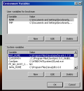
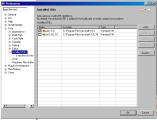

Welcome to Interactive Web Physics. IWP is Java software that facilitates the animation, design, and distribution of interactive Physics Animations, all without requiring programming.By expressing interest in developing this software, you are continuing a project that started in 1998 at the North Carolina School of Science and Mathematics under the guidance of Dr. Loren Winters.
This document walks a new developer through how to check out the source code from SourceForge and get the latest development version building under Eclipse for Windows. This is quite a feat, as IWP has been developed primarily under RedHat Linux for the past 8 years!
I tagged the CVS Tree with "tag_2007-Jan-17_EclipseWindowsHOWTO" during the writing of this document. I had to make some CVS acsii / binary tweaks and check in my eclipse .project file to get things to work out of the box from CVS. I have walked through each of these steps twice and captured screenshots along the way.
1.1) To get started, download:
JDK 6:
http://java.sun.com/javase/downloads/index.jsp
Eclipse SDK 3.2.1: http://www.eclipse.org/downloads/
(Just get the base free version, not any of the fancy packages)
And for command line builds: (not covered here, but not required.)
Apache Ant: http://ant.apache.org/bindownload.cgi, get the .zip
1.3) Unzip eclipse into C:\Program Files\eclipse\
1.5) I made a start menu shortcut to C:\Program
Files\eclipse\eclipse.exe
1.7) I set these environment variables.
JAVA_HOME=C:\Program Files\Java\jdk1.6.0
ANT_HOME=C:\Program Files\Java\apache-ant-1.7.0
PATH=....;C:\Program Files\Java\jdk1.6.0\bin;C:\Program
Files\Java\apache-ant-1.7.0\bin
Where ... is what PATH's previous value was set to.
Adding two new paths onto the end.


1.9) You can check the version of Eclipse by Menubar -> Help ->
About Eclipse SDK

1.11) Open MenuBar -> Window -> Preferences. Navigate Java -> Installed
JREs and make sure that the jdk1.6.0 is the selected VM.

2.1) Make sure that you have a Sourceforge account and are a member of
the Interactive Web Physics development project in Sourceforge.
Sourceforge: http://www.sourceforge.net
Sourceforge IWP Project Page: http://sourceforge.net/projects/iwp

2.3) Enter the Information to check out a copy of the project from CVS:
Host: iwp.cvs.sourceforge.net
Repository Path: /cvsroot/iwp
User: brockman
Password: ********
Connection type: extssh
Yes: Use Default Port
Yes: Save Password
[Next]


2.5) Check out the project into the workspace. I called it iwp-cvs for
clarity.
2.7) Select Tag = HEAD. This is the latest and greatest experimental
version of code where new features go. Tagging + Branching is a
different topic. Version 2 of IWP has it's own tag. This is how I timetravel to fix
bugs in the past - and thus make them vanish in the present!
2.9) You should see the new 'iwp-cvs' project all checked out in your
Package Explorer.
3.1) Because the source doesn't live off of the top of the checkout,
you'll need to link the source in. The way the project is configured in
Eclipse, there is a default linking, but it's set to a path on my
Windows system. You'll need to customize it.
Right click the project name, and open properties.


3.3) Change the "Linked Folder Location" to the /src/ directory in your
workspace that you set when you initially started Eclipse. Usually,
C:\Documents + Settings\Username\workspace\. This may cause the code to
build clean, which is good.


3.5) Let's get rid of the Errors. Right click the project again and go
to Properties. Chose Java Compiler -> Errors and Warnings on the
left. Turn on Enable Project Settings, and Roll down the Potential
Programming Problems section. Change the Serializable class without
serialVersionUID to 'Ignore'.


3.7) Back to the Project Properties dialog, this time choose Java
Compiler on the left. Enable project settings and change the Compiler
Compliance Level to 1.4. Pressing Apply or OK causes another build
clean, which is good.


4.1) Find the srclinked -> edu.ncssm.iwp.bin.IWP_Animator class in
the Package Explorer. This has the main() that is called in the
iwpStudent.jar manifest, and is the starting point of Animator
Application Execution. Right click on this application and choose 'Run
as Application'.
4.3) You can alter the command line arguments, runtime directory, and
all sorts of other neat things by MenuBar -> Run -> Run.... Also,
a neat trick to re-run the last command is to use the Green Play button
on the toolbar in the Main Java Perspective. Run lives two buttons to
the right of the Print icon.

4.5) Now, Package Explorer ->
srclinked/edu.ncssm.iwp.bin.IWP_Animator -> Right Click -> Debug
As -> Java Application. You'll be asked about switching to the Debug
Perspective. This is good. You should now be in debug perspective, with
execution paused at your first breakpoint.

5.1) For demonstrations, I like to edit BUILD.txt to make the changes
really subtle and not affect functionality. Open BUILD.txt in the
package explorer, add some text, and then Right Click iwp-cvs project
-> Team -> Synchronize with Repository.
5.3) The Synchronize Tab shows all the files you will be committing to
the tree. I have 3 here - my expected BUILD.txt text change, which I
2-Pane diffed on the Right hand side. Also, I have two config
adjustments, which is cool - these were my error changes. Hopefully
these will have persisted for you and you will not have had to perform
steps 3.5 - 3.7.
I am a big fan of code reviews before committing to the tree. Please
take a moment to review your changes before committing to the tree. Oh,
and never break the build - the HEAD version of CVS should always
compile cleanly without any warnings!


5.5) Once you commit, the Synchronization menu will be empty. To change
back to the Java perspective, use the Perspective control at the Top
Right, or Menu Bar -> Window -> Open Perspective -> Java.

{kind=link}
{kind=link}
{kind=link}
{kind=link}
{kind=link}
{kind=link}
{kind=link}
{kind=link}
{kind=link}